How Khan Academy, Coursera, Duolingo, and Upwork answer “what should I do now?” — and what EduMind Student Home should learn without copying their look.
EduMind Home must answer four questions: what to do now, what needs attention, what is happening today/this week, and how I am progressing. None of the four apps solve all four. Each is strong at one job.
Calm catalog + mastery. Next action appears inside a course (Mastery Challenge), not as a student-day dashboard. Hierarchy is excellent. Habit, planner, and AI chat are weak or missing on mobile.
Best Continue Learning card: course, module, percent, duration, Play. Home/Learn is still a course list. Discovery and certificates dominate store creative. EduMind must not copy this as Student Home.
Best next action in the world: one START node on a path. Streak, XP, and leagues create habit. Aesthetic is cartoon. Borrow the principle, not the owl.
Professional density, scanning, messaging, and a named AI (Uma) with a single insert CTA. Not a learning Home — use it for cards, nav, and AI semantics.
Khan’s top-level mobile job is find a subject. Search + Filter + a chevron list. “Surprise me!” is the only playful CTA. This is catalog UX. EduMind should keep this pattern in موادي, not on الرئيسية.
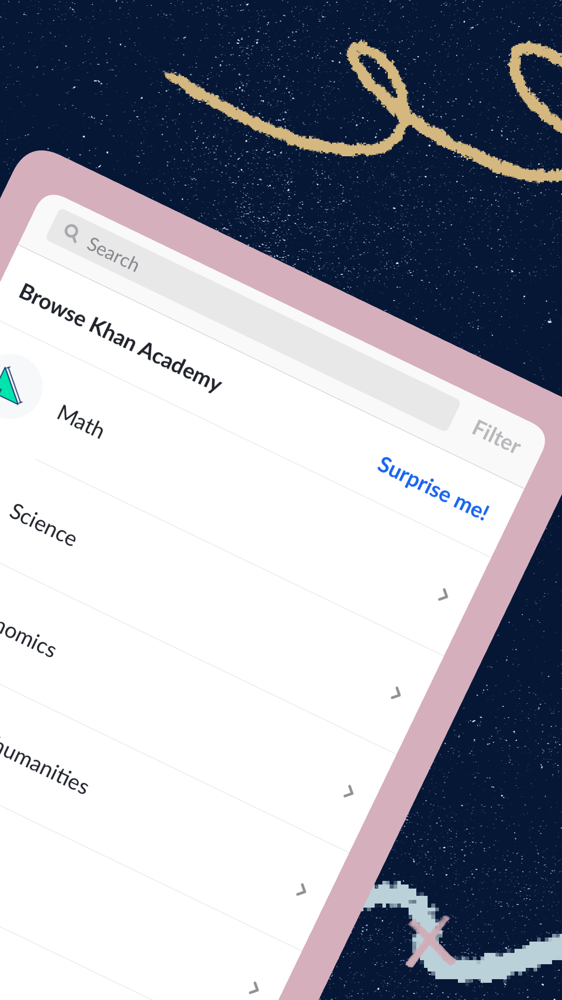
1Search first. Discovery is a tool, not a feed.
2One-column list. Math → Science → Economics. Icons are optional; chevrons do the work.
3Whitespace is the brand. Few colors, lots of air. Feels like a textbook, not a marketplace.
4Missing for EduMind: greeting, today, streak, tutor, messages. Khan Home is not a student OS.
Inside 5th grade Math, Khan puts a Mastery Challenge card above the unit list. That is their next-mission pattern. Progress is mastery points, not a streak flame.
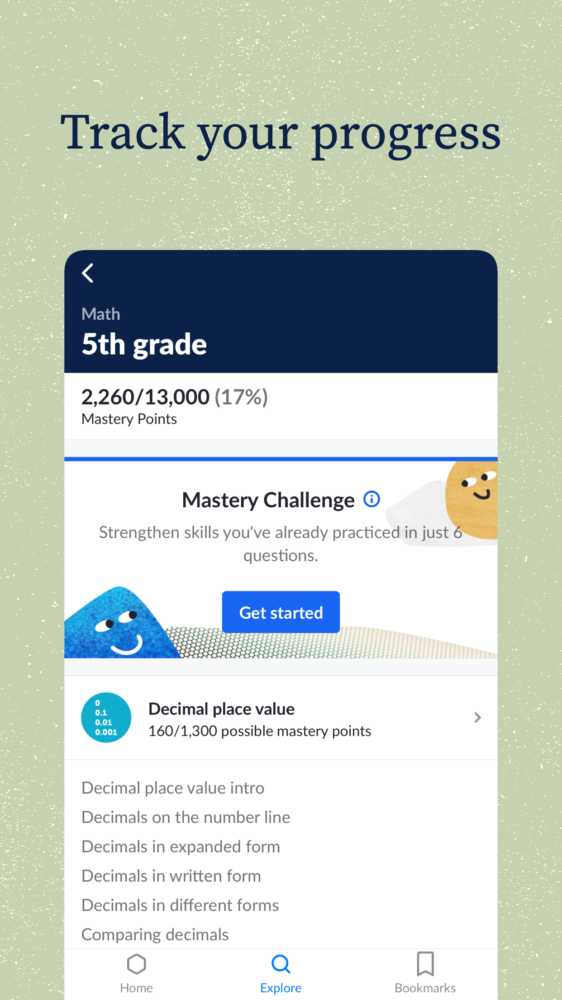
1Context bar: Math · 5th grade. Always know where you are.
2Mastery Points 17%. Quantitative progress at course level.
3Get started is the only primary button. One next action.
4Unit → lesson list under the CTA. Hierarchy Course → Unit → Lesson.
5Bottom nav: Home · Explore · Bookmarks. Three destinations. Simple.
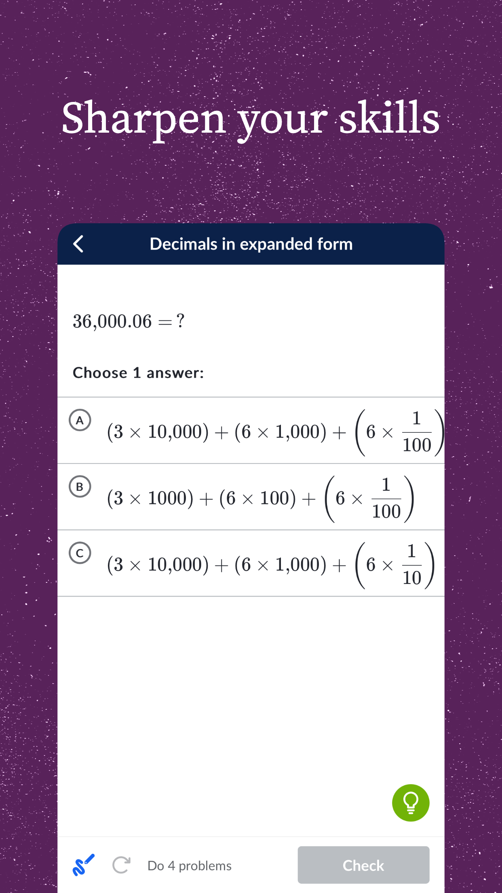
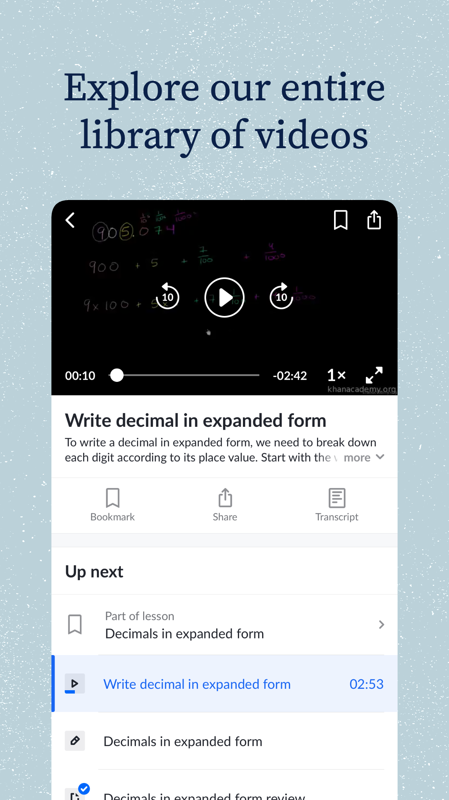
UX takeaway: Decision fatigue is killed by showing one problem. Sequence is shown as “Up next”, not as a catalog. EduMind lessons should feel this calm. Keep AI as a cyan assist, not a second lesson type competing on the same row.
Coursera’s official iOS creatives sell experts, certificates, and career paths. That is the pattern EduMind Student Home must avoid. The useful screen is “All Courses / Start Today”: resume + progress + Play.
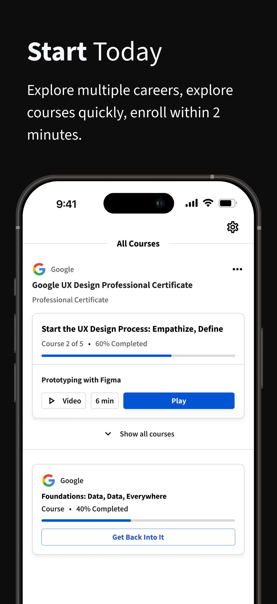
1Title is “All Courses”. This is My Learning, not a day OS.
2Hero card: Google UX certificate, Course 2 of 5, 60%, current lesson “Prototyping with Figma”, 6 min, Play.
3Time-to-start next to Play reduces friction. EduMind should show minutes left on المهمة التالية.
4Secondary course uses “Get Back Into It” ghost button. One primary, others quieter.
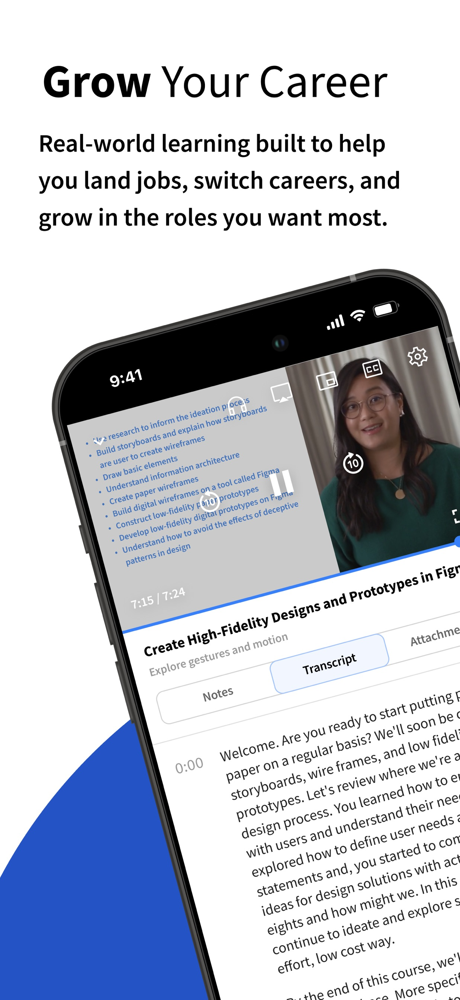
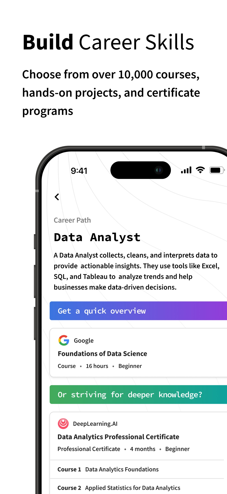
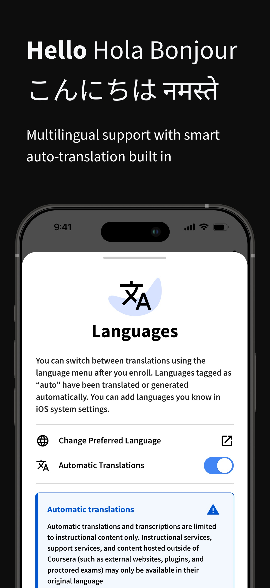
Borrow: continue-learning anatomy (provider, % , lesson name, duration, one Play). Borrow: sheets for settings/language. Avoid: Home as discovery. Coursera Help Center also names a dedicated Learn tab for enrolled programs — catalog is a different surface.
Official Duolingo blog (May 2022 / path live 1 Nov 2022) documents the current Home architecture: a vertical path, one highlighted node, START. Feb 2026 core-tabs post shows the same path still in production with refreshed tabs.
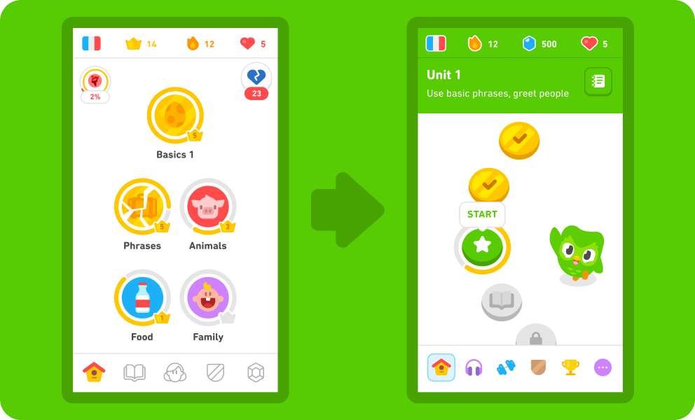
1Decision fatigue. Old Home: many skill circles. New Home: one START.
2Unit header answers “what am I learning?” — “Use basic phrases, greet people.”
3Locked future is visible but not tappable. Path, not menu.
4Top stats: flag, streak, gems, hearts. Motivation without a dashboard essay.
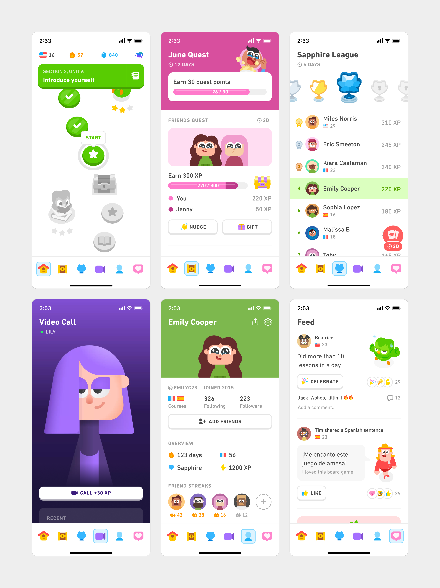
Home is not where leagues, quests, and feed live. EduMind should likewise keep XP/streak as a snapshot on الرئيسية, and push leagues-style social (if ever) off Home. Video-call AI is a dedicated tab with a single CALL +XP CTA — named character, one action.
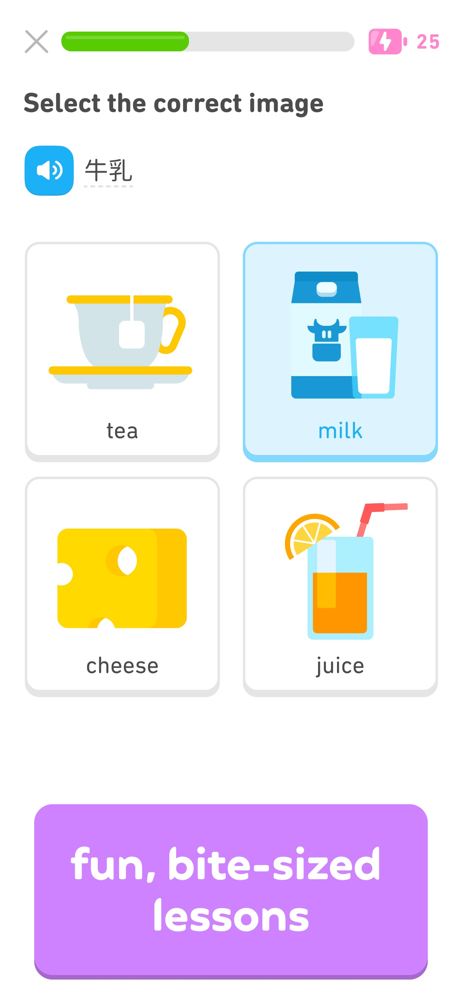
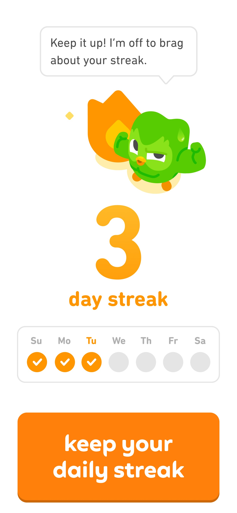
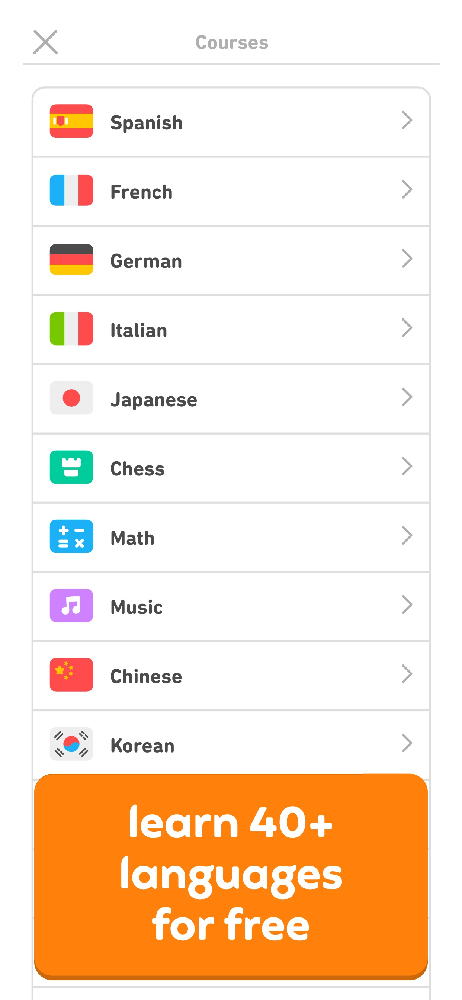
Upwork is here for density, messaging, and AI-in-a-task. Home is not a learning dashboard.
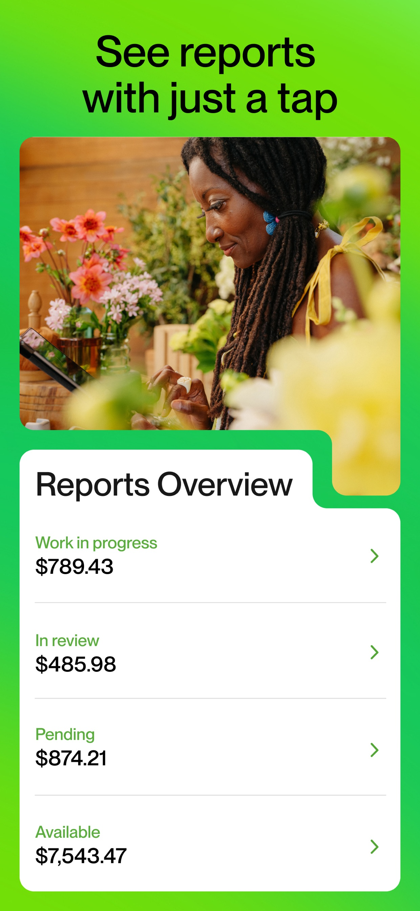
1Scanable rows. Work in progress, In review, Pending, Available. EduMind progress snapshot can be this dense.
2Color is labels, not decoration. Green type, black numbers, grey chevrons.
3One tap to detail. Summary never dumps the full ledger on Home.
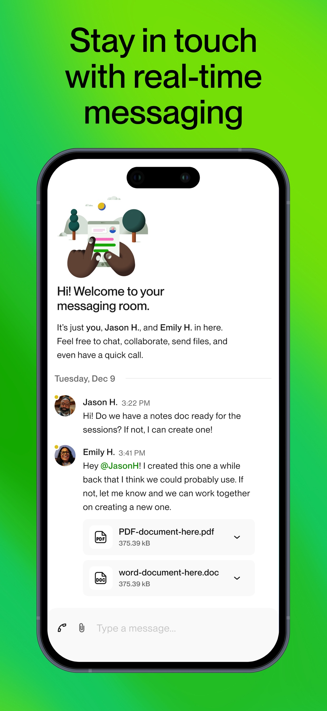
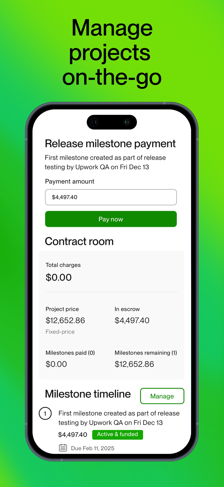
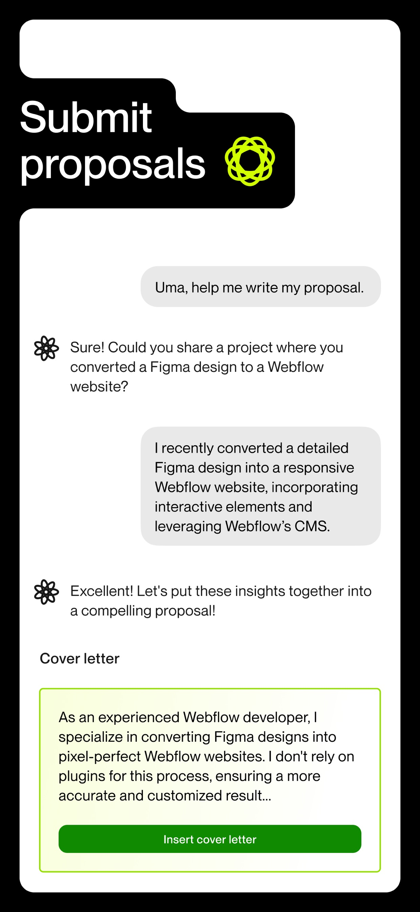
AI rule from Uma: assistant has a name/mark, lives inside the job, produces an insertable artifact, one green CTA. EduMind AI Tutor should be cyan, task-bound (explain this quiz / plan this session), never a second Home feed.
EduMind Home is closer to Duolingo’s job (next action) + Khan’s calm + Coursera’s resume anatomy + Upwork’s density — with planner/routine that none of them have.
| Home question | Khan | Coursera | Duolingo | Upwork |
|---|---|---|---|---|
| What should I do now? | Mastery Challenge in-course | Play on top enrolled card | START on path | Context-specific (pay / apply) |
| What needs attention? | Weak — mastery only | Weak — resume only | Hearts / quests (off Home) | Strong — statuses & unread |
| Today / this week? | No | No (deadlines buried) | Streak week + quests | Due dates on contracts |
| Continue? | Pick up where you left off (copy) | Excellent | Always the next node | N/A |
| Progress? | Mastery % | Course % | Path + XP + streak | Money states |
| Above-the-fold cards | ~1 CTA + units | 1–2 course cards | 1 node + unit header | 4 metric rows |
EduMind already has the right sections in code (JourneyHero, Today/This week, توصية EduMind, تابع التعلم, progress, لمحة المواد). The benchmark says: make المهمة التالية visually dominant like Duolingo START, keep catalog in موادي like Khan browse, and never let Home become Coursera Learn.
| Pattern | Khan | Coursera | Duolingo | Upwork | EduMind relevance |
|---|---|---|---|---|---|
| Clear next action | Medium | Strong | Strong | Medium | Core of الرئيسية |
| Personalized recommendation | Medium | Medium | Weak | Medium | توصية EduMind / cyan AI |
| Current progress | Strong | Strong | Strong | Strong | Snapshot, not a chart wall |
| Today / week context | Weak | Weak | Medium | Medium | EduMind differentiator |
| Continue learning | Medium | Strong | Strong | n/a | Secondary to Next Mission |
| Card density | Low-med | Medium | Low | High | 2–3 major cards above fold |
| Content discovery | Strong | Strong | Weak | Strong | Keep off Home |
| Motivation / streak / XP | Weak | Weak | Strong | n/a | Amber chips, not a game |
| AI / tutor | Weak in-app | n/a | Medium | Strong Uma | Cyan, task-scoped |
| Navigation | 3 tabs | Learn vs catalog | 6 tabs | Clear IA | Student: 5–6 tabs max |
| Notifications | Medium | Medium | Medium | Strong | Bell in top bar |
| Messages | Weak | Weak | Weak | Strong | Tab + badge, not Home body |
| Profile | Medium | Medium | Strong | Strong | حسابي owns identity |
| Visual complexity | Low | Medium | Playful | Dense-pro | Professional + air |
No partner logo walls, career paths, or certificate mosaics on الرئيسية. Catalog belongs in موادي / استكشف / الاشتراكات.
No owl, no candy path, no 6 equally loud tabs of games. No hearts that punish studying. EduMind is school-grade, indigo, Cairo, RTL.
A browse list does not tell a Syrian 11th-grader what to do at 6:30pm. Khan has no Routine, Planner, or parent loop.
Do not pack Home like a job list. Density is for snapshots and messages, not for 12 competing CTAs.
Not an LMS Home. A daily operating system. Terminology matches current product (ST01).
Visual rules
Bottom nav is the product map. Home does not repeat موادي as a grid.
PrimaryButton once.EduCards before first scroll; 3 planner rows max.Spacing.section; do not tighten to Upwork density on Home.AiMarker + one recommendation card. Uma pattern: produce an action (open lesson / insert plan), not an essay.Arrangement respects layout direction; linear progress mirrors; numerals use existing numeral helper.Research only. No Android / Gradle / Kotlin changes were made.
Accessed 5 Sep 2026. Versions from iTunes Lookup API.
| Platform | Screen | File | Source | Type | Date |
|---|---|---|---|---|---|
| Khan Academy | Browse / slogan | images/khan-academy/01–02 | App Store id 469863705 | Official store | v8.5.1 · 13 Aug 2026 |
| Khan Academy | Course mastery / next CTA | 03.png | same | Official store (framed) | same |
| Khan Academy | Exercise / video / article | 04–06 | same | Official store (framed) | same |
| Coursera | Lesson player | coursera/01 | App Store id 736535961 | Official store (framed) | v8.18.1 · 31 Aug 2026 |
| Coursera | Onboarding / career / certs | 02–04 | same | Official marketing UI | same |
| Coursera | All Courses continue | 05.jpg | same | Official store | same |
| Coursera | Offline / languages | 06–07 | same | Official store | same |
| Duolingo | Courses, lessons, streak, music | duolingo/01–08 | App Store id 570060128 | Official store | v7.138.0 · 2 Sep 2026 |
| Duolingo | Path Home vs tree | duolingo-blog/06 | blog.duolingo.com/new-duolingo-home-screen-design/ | Official blog | Published 2022 |
| Duolingo | 2026 core tabs incl. Home path | duolingo-blog/16 | blog.duolingo.com/core-tabs-redesign/ | Official blog | 4 Feb 2026 |
| Upwork | Uma, chat, reports, projects | upwork/01–06 | App Store id 1446736499 | Official store | v2.12.0 · 26 Aug 2026 |
| Khanmigo | Scope note (no chat screenshot) | — | support.khanacademy.org article 13982530363533 | Official help | Cited 2026 |
| Coursera | Learn tab behavior | — | coursera.support learner-000001541 | Official help | Cited 2026 |
Play Store HTML assets were also pulled (images/*-play/) as secondary; many duplicate App Store marketing frames or include icons. Prefer App Store + Duolingo blog as cited above.